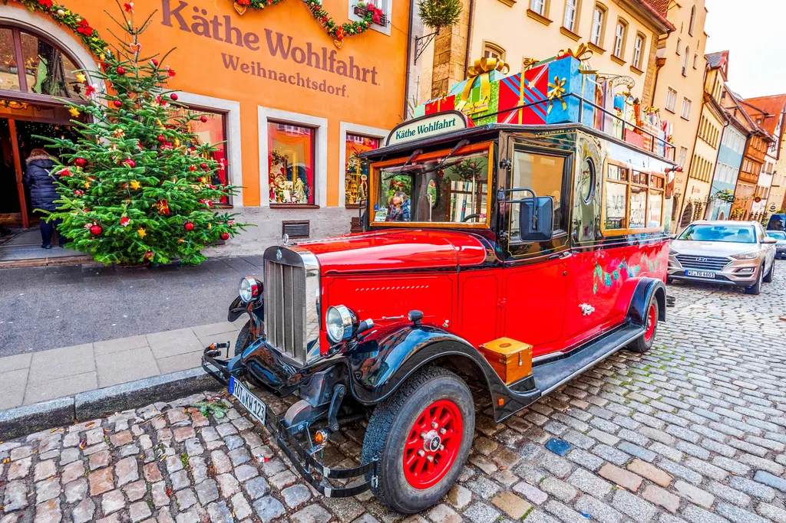
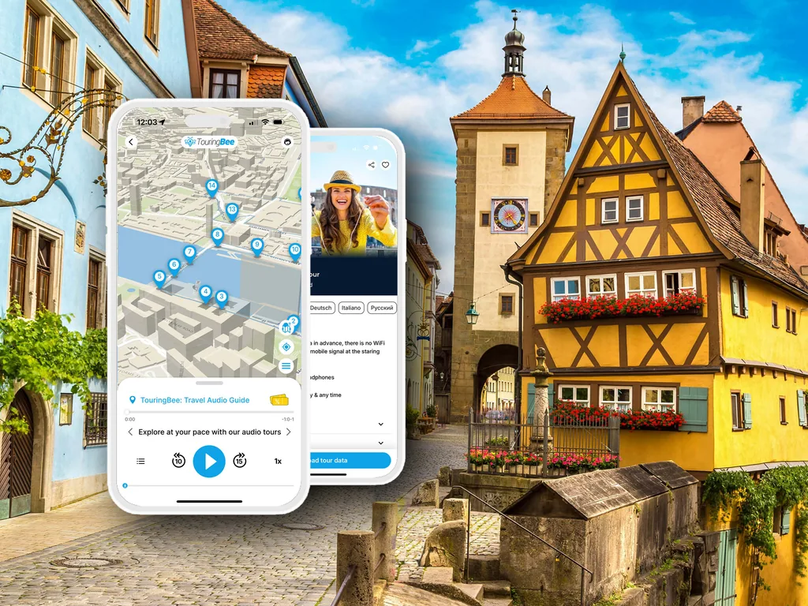
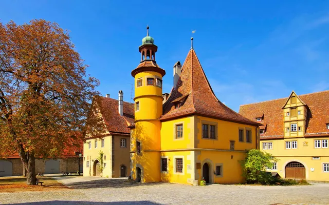
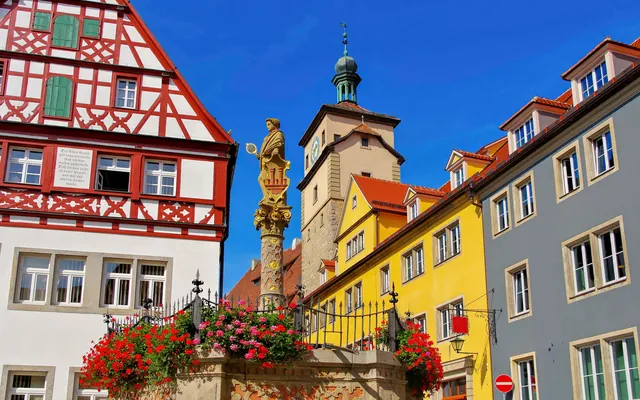

German Christmas Museum in Rothenburg: Is It Worth It?
What is in the collection, what it costs, and the difference between the museum and the shop underneath it.
Buy the Audio Guide The Verdict Quick AnswersAlmost everybody who walks into Käthe Wohlfahrt’s Christmas Village on Herrngasse has no idea there is a museum above their head. And a good share of the people who say they “went to the Christmas museum” actually went shopping.
That confusion is the most useful thing to clear up before you spend anything here. Downstairs is a shop — enormous, free to enter, built so that leaving empty-handed feels like a mistake. Upstairs, reached by a staircase from inside that shop, is the Deutsches Weihnachtsmuseum: a real museum with a ticket desk, a collection, labels and an argument to make.
This page answers one question: whether the upstairs part is worth your €5 and your hour. Short version — yes if you like objects and the history behind them, no if you came for the lights and the atmosphere, because those are free, downstairs and out in the street. The town between the two is worth listening to: the TouringBee audio guide to Rothenburg runs 25 stops in about ninety minutes.
Still planning the whole trip? Start with our complete guide to Rothenburg ob der Tauber or our honest take on Christmas in Rothenburg, then come back here for the museum.
At a glance
- Address
- Herrngasse 1 — entrance through the Käthe Wohlfahrt shop
- Adult
- €5.00 · concession €4.00 · children 6–11 €2.00
- Family
- €11.00 (2 adults with children under 14) · groups 20+ €3.50 each
- Hours
- Around 10:00–17:00 — but Sunday needs checking (see below)
- How long
- 45–60 minutes
- Access
- Not step-free — stairs from inside the shop
Shop or museum? The difference in one paragraph
The Christmas Village (Weihnachtsdorf) is retail. Free entry, open 10:00–18:00 every day of the year, including a Sunday in July. Inside: a rotating pyramid several metres high, nutcrackers from knee-height to taller than you, hand-blown glass, wooden Erzgebirge work, candle arches, thousands of items under an indoor night sky.
The German Christmas Museum is a museum. Paid entry, upstairs, nothing for sale, roughly 10:00–17:00. Inside: the history of how Germans actually decorated for Christmas between the nineteenth century and about 1950, told through the things themselves.
Same building. Same owners — the museum is run by the Wohlfahrt family, which is worth knowing when you weigh what it says. Completely different experience.
What is actually inside the museum
The collection is small, dense and object-led. The strongest parts:

Trees that are not trees. Before the twentieth century a German Christmas tree was not necessarily a fir. The museum shows goose-feather trees: wire frames wrapped in dyed goose feathers, made when real firs were scarce and expensive. These were the first mass-produced artificial Christmas trees, and seeing one in person rearranges your idea of what “traditional” means.
Glass before it was cheap. The baubles everyone now buys by the box began as substitutes. Thuringian glassblowers made them to imitate the apples and nuts families hung on the tree and could not always afford. The museum follows that line from imitation fruit to the mass-produced sphere.
Nutcrackers with a grudge. The Erzgebirge nutcracker was not designed to be cute. The figures are soldiers, kings, policemen, officials — the people who gave nineteenth-century villagers orders — redrawn as servants who crack your nuts for you. Once you know that, the whole shelf downstairs reads differently.
Cotton-wool and tragacanth figures, Leonic wire ornaments, early Advent calendars, nativity scenes, smoking men. The ordinary mass-market decoration of a century ago, which almost nobody kept — which is exactly why it is in a museum.
The competing gift-bringers. A section on who actually brings German children their presents: St Nicholas, the Christkind, the Weihnachtsmann. If you ever wondered why Bavaria credits the Christ Child and Hamburg credits a bearded man in red, the answer is laid out here.
Is it worth €5?
Here is the honest split.
Worth it if you like social history through objects; if you have ever wondered where a tradition came from rather than just enjoying it; if you are travelling with a teenager who has stopped being impressed by streets; or if it is raining and you want an hour indoors that is not a café.
Not worth it if you came to Rothenburg for the look of the place. The museum will not give you that. The free parts of the town do it better: the market square at dusk, the wall walk in the dark, the shop downstairs with its indoor night sky.
Also not worth it if “museum” to you means several hours and a big building. This is 45 minutes to an hour on one floor above a shop, and the rooms are not large. At €5 that is fair, not generous.
One group gets a clear yes: anyone planning to buy an ornament. Walk the museum first and the shop afterwards. You will know what a Leonic ornament is, why one nutcracker is carved and another turned, and what you are actually paying for. It turns shopping into choosing.
Hours, prices and the one thing to check
Prices are straightforward and confirmed on the museum’s own site:
- Adults
- €5.00
- Concession
- €4.00 — pensioners, students, visitors with a disability
- Children 6–11
- €2.00
- Family
- €11.00 — 2 adults with children under 14
- Groups 20+
- €3.50 per person
Hours are where it gets annoying, and we are not going to pretend otherwise. As of writing, the museum’s three official channels say three different things. Its own site still shows a timetable with 2024 dates and the line “Sunday / Holiday closed”. Its second site lists Monday to Sunday 10:00–17:00. The company’s store finder lists the museum as Monday to Saturday 10:00–17:00 and Sunday 11:00–17:00.
What we can say with confidence: 10:00 to 17:00 is the shape of the day, last admission is half an hour before closing, and Sunday is the slot to verify. During Advent the museum has run longer evening hours in past years, and over Christmas itself it runs shortened ones. If your visit depends on a particular day — a Sunday, a public holiday, or 24–26 December — phone 09861 409365 the day before. One call beats a wasted walk up Herrngasse.
Access. It is not step-free: you reach the museum by a staircase from inside the shop.
When to go, and how to miss the crowd
The shop below is the busiest interior in Rothenburg, and its queue shapes your visit whether you want the museum or not.
From late morning to late afternoon in season there is a line to get in downstairs, and the aisles between the displays are narrow enough that one coach group jams them. The clean window is right at the 10:00 opening, before the day’s coaches arrive around 10:30. The second-best window is the last hour before closing.
The museum upstairs is calmer than the shop at any hour — the ticket desk filters out most of the crowd by itself. But you still have to walk through the shop to reach it.
A practical sequence for a December afternoon: museum first while there is daylight you do not mind losing, shop second, and keep the street for dusk. The market square is worth more to you at 16:00 than any interior is.
If you are here on a day trip, the clock is tighter than it feels. Most organised round trips from Munich, Frankfurt or Nuremberg leave you three to five free hours in town, and an hour indoors is a real trade against daylight — on a short visit, daylight usually wins. If you have not sorted transport yet, it is worth comparing day trips on GetYourGuide before you commit to a train plan.

Rothenburg City Walk — Self-Guided Audio TourInstant access
- 100% offline — no Wi-Fi or data needed
- Offline GPS map — you start each track yourself at the spot
- 25 stops from Marktplatz to the Hospital Bastion
- Walk it in 1.5–2 hours, at your own pace
A note on buying something that lasts
If you do buy, buy once and buy well. The things worth carrying home from Rothenburg are hand-blown glass and carved wood — objects that survive decades in a box in the attic and come out every December. People inherit these. That is a different purchase from a fridge magnet, and the museum upstairs is the reason you will be able to tell the difference.
Two cautions. Photography and filming inside the shop are restricted, so plan to look rather than shoot. And not every wooden item on the shelves is Erzgebirge hand-work — some of the mass-market range is made under licence elsewhere. Ask, and look at the price: the real thing does not pretend to be cheap.
Practical notes
Prices verified on the museum’s official site for the 2026/27 season. Hours cross-checked against three official channels, which disagree — see above. Check before you travel.
Address. Herrngasse 1, a minute uphill from Marktplatz. The entrance is through the Käthe Wohlfahrt shop; the museum has no separate street door.
How long. 45–60 minutes for the museum. Add anywhere from 20 minutes to an hour for the shop, depending on your willpower.
Language. Labelling covers German and English.
With children. Children aged 6 to 11 pay €2, and the nutcracker and gift-bringer sections hold a child’s attention better than the glass cases do. The shop downstairs will be the part they remember.
Staying over. The museum is a one-hour thing; the town is an evening thing. If the choice is yours, sleep inside the walls — hotels in the old town sell out months ahead for Advent weekends, and the reward is the empty lit streets after the day visitors leave.
Rainy-day stacking. If the weather has ruined your plan, the museum pairs naturally with the Medieval Crime Museum and St James’s Church — all three are indoors and within a few minutes’ walk of each other.


Frequently Asked Questions
How much does the German Christmas Museum cost?
€5.00 for adults, €4.00 concession, €2.00 for children aged 6 to 11, €11.00 for a family ticket covering two adults with children under 14, and €3.50 per person for groups of 20 or more.
What is the difference between Käthe Wohlfahrt and the German Christmas Museum?
Käthe Wohlfahrt’s Christmas Village is a shop: free, open daily 10:00–18:00, all year. The German Christmas Museum is a paid museum upstairs from it, reached by a staircase inside the shop, with a collection on the history of German Christmas decoration. Same building, same owners, different thing.
Is the German Christmas Museum open on Sundays?
This is the one detail to check. The museum’s own website currently shows “Sunday closed” on an out-of-date timetable, while its second official site lists daily 10:00–17:00 and the company’s store finder lists Sunday 11:00–17:00. Call 09861 409365 the day before if Sunday is your only option.
Is the Christmas museum worth visiting?
Yes if you are interested in where the traditions came from, or if you are about to spend money on ornaments and want to know what you are buying. No if you came for atmosphere — the free shop downstairs and the town at dusk deliver that better.
How long do you need at the German Christmas Museum?
Allow 45 minutes to an hour. Add time for the shop below, which is harder to leave than it looks.
Is Käthe Wohlfahrt open all year?
Yes. The Christmas Village trades 365 days a year, 10:00–18:00, including in high summer. Walking in from a warm street into pine, cinnamon and an indoor night sky is a genuinely strange experience, and it is free.
Is the museum suitable for wheelchair users?
No. Access is by a staircase from inside the shop, and the museum is not step-free.
Continue exploring
Some outbound links on this site are affiliate links. If you book through them we may earn a commission, at no extra cost to you.
The Town Is the Other Half of the Story
Twenty-five stops from Marktplatz to the Hospital Bastion — about ninety minutes, offline, at your own pace.
Get the Audio Tour — from €9.99